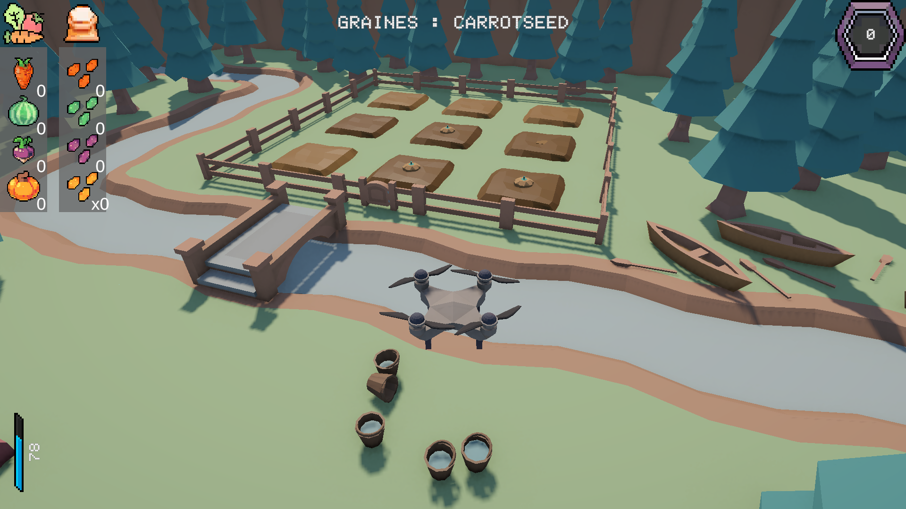
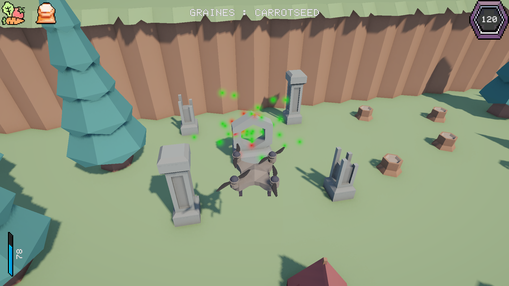

Aperçu du jeu
Durant ma troisième année, j’ai travaillé sur Tiny Veggie Garden, un projet imposé dans lequel on incarne un petit drone chargé de planter et récolter des légumes. Pour le réaliser, je me suis appuyé sur un cahier des charges détaillant les éléments obligatoires à intégrer.
Étant seul sur ce projet, j’ai utilisé des assets en ligne pour l’environnement, les ambiances et le son. En revanche, l’intégralité de la programmation a été réalisée par mes soins.
Tiny Veggie Garden est le premier des trois jeux que j’ai développés en solo durant ma troisième année, et également le plus simple à concevoir.

Techniques :
Transversales :
Humaines :

Pour conclure, Tiny Veggie Garden a été une excellente expérience de développement de jeu vidéo sous Unity. Il s’agissait également du premier projet de jeu que je réalisais entièrement seul. Cette autonomie m’a permis de toucher à l’ensemble des aspects du développement, et de prendre conscience du nombre important de tâches nécessaires à la conception d’un jeu complet.
Ce projet m’a particulièrement plu grâce à son originalité. Pouvoir travailler sans équipe, pour une fois, m’a offert l’occasion de gérer moi-même chaque étape du processus et d’explorer des domaines que je n’aurais peut-être pas abordés autrement.